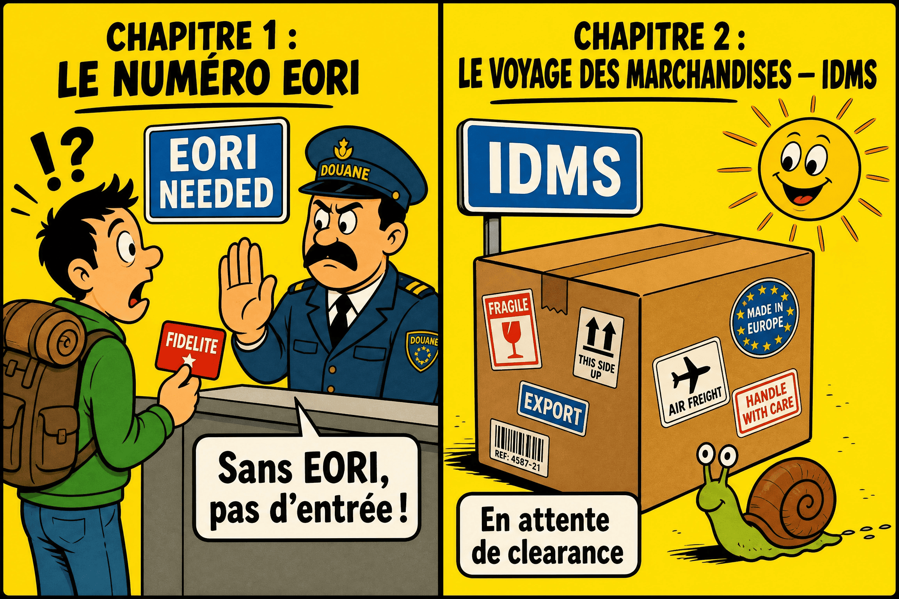
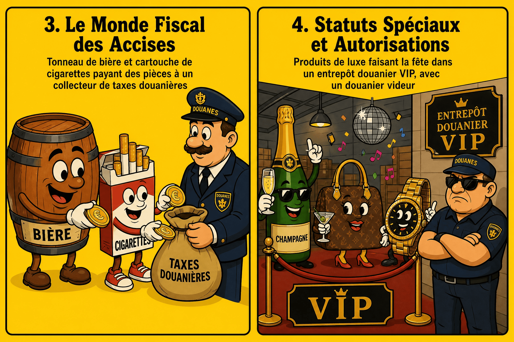
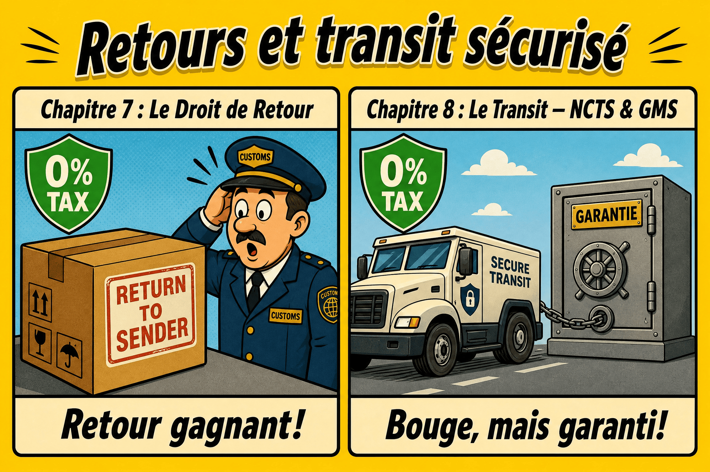
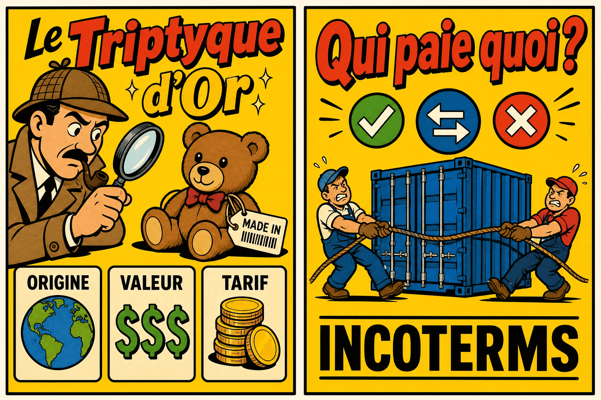
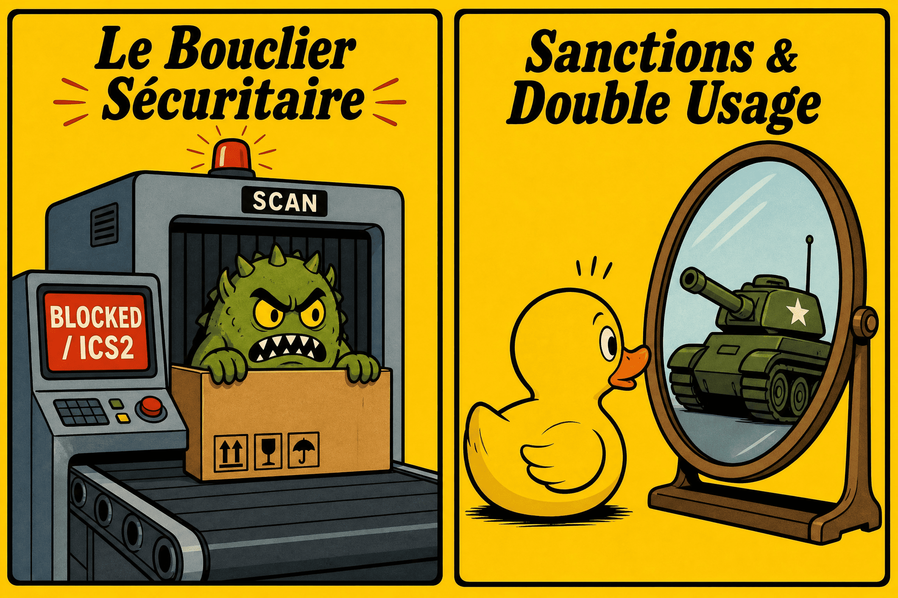
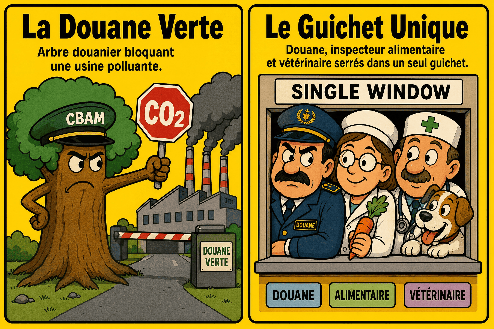
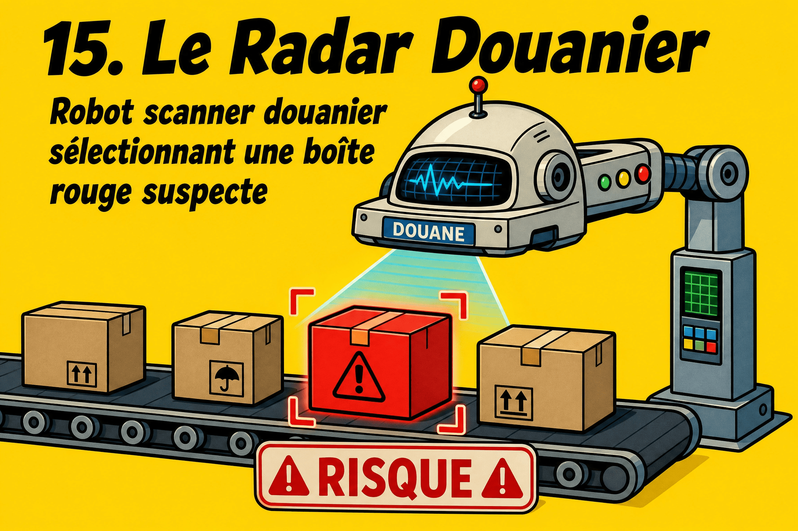

Préface
Pourquoi ce guide ?
Le monde de la douane et des accises est souvent perçu comme une forteresse administrative, bâtie sur des textes de lois complexes, des acronymes obscurs et des procédures informatiques extrêmement strictes. Pourtant, derrière cette apparente austérité, se cachent des mécanismes fascinants et indispensables à la vie économique de notre pays et de l'Union européenne.
Ce document est né d'une volonté simple : la vulgarisation. Il s'agit d'une tentative de rendre des concepts techniques, douaniers et fiscaux, accessibles à tous. Que vous soyez un nouvel agent (Testeur QA, Business Analyst, Développeur) intégrant le département SSDD, un professionnel de la logistique cherchant à clarifier certains processus, ou simplement un curieux désireux de comprendre comment les marchandises franchissent nos frontières, ce guide est fait pour vous.
J'ai fait le choix d'adopter un ton volontairement direct, conversationnel et pédagogique, en m'appuyant sur des analogies, des schémas simplifiés et de nombreux cas pratiques. L'objectif n'est pas de remplacer les textes légaux (qui restent la seule référence juridique), mais de vous fournir la boussole et la carte IT nécessaires pour naviguer sereinement dans cet écosystème.
Bonne lecture, et bienvenue à la frontière !
— Mohamed Amine EL AAJI
Bienvenue à la Frontière ! 🛂
Je vais t'accompagner pas à pas à travers les mécanismes de la réglementation douanière et te guider avec des explications et des questions tout au long de notre parcours. Bienvenue dans notre guide « La Douane et les Accises pour les Nuls ».
Pour bien débuter, la douane n'est pas simplement une barrière physique aux frontières. C'est à la fois le gardien de sécurité et le comptable d'un immense espace partagé : l'Union européenne 🇪🇺. Depuis la création de l'Union douanière, les États membres partagent une seule et même frontière extérieure et un tarif douanier commun. Cela signifie qu'une marchandise venue d'Asie, une fois dédouanée en Belgique, peut circuler librement jusqu'en France ou en Allemagne sans subir de nouveaux contrôles douaniers.
Le travail de l'administration s'articule autour de trois grandes missions :
-
La fiscalité : Percevoir les droits de douane (qui vont au budget européen pour protéger notre économie de la concurrence extérieure) et les taxes nationales comme la TVA.
-
La protection : Contrôler que les produits importés (jouets, aliments, médicaments) respectent les normes de sécurité et de santé européennes.
-
Les accises : Des taxes nationales indirectes spécifiques qui frappent certains produits bien précis (alcools, tabacs, produits énergétiques) afin de réguler leur consommation (santé publique/écologie) et d'alimenter les caisses de l'État.
Aujourd'hui, tout cet écosystème est entièrement numérisé. Chaque étape fait intervenir des applications informatiques belges interconnectées avec les bases de la Commission européenne.
Le cycle de vie d'une marchandise "End-to-End" 📦
Voici un aperçu global simplifié du trajet d'un conteneur asiatique vers la Belgique.
Incoterms
ENS via ICS2
Port / IRP
H1 dans IDMS
Filtre SEDA
Mainlevée
La Carte d'Identité Douanière 📜
Pour comprendre la douane, il faut d'abord visualiser son terrain de jeu et savoir qui y participe.
1. Le Territoire Douanier de l'Union (TDU) 🌍
L'Union européenne forme un seul et unique bloc face au reste du monde : le Territoire Douanier de l'Union (TDU). À l'intérieur de ce territoire, les marchandises européennes circulent librement d'un pays à l'autre sans aucun contrôle douanier. Aux frontières extérieures (comme au port d'Anvers ou à l'aéroport de Bruxelles-National), la douane applique les mêmes règles pour toutes les marchandises entrant ou sortant de l'UE.
Les 27 États Membres (et leurs codes pays)
Cependant, attention aux pièges ! Le TDU n'est pas une copie conforme de la carte politique ou géographique de l'Europe. Certains territoires politiques de l'UE sont exclus de la douane, et inversement, des territoires hors de l'UE y sont inclus.
🪤 Piège Classique Anomalies géographiques
Ceuta et Melilla : Ces deux villes sont des enclaves situées sur le continent africain. Bien qu'elles soient politiquement espagnoles (et donc dans l'UE), elles sont strictement exclues du Territoire Douanier de l'Union. Expédier une marchandise de Madrid à Ceuta nécessite donc obligatoirement une déclaration d'exportation ! (Note : Même si des accords spécifiques permettent d'appliquer 0 % de droits de douane à l'arrivée grâce à l'origine préférentielle, la frontière douanière existe et la déclaration informatique est obligatoire).
L'Irlande du Nord (L'exception post-Brexit) : Depuis le Brexit, l'Irlande du Nord n'est politiquement plus dans l'UE. Cependant, pour éviter le retour d'une frontière physique avec l'Irlande du Sud, elle continue d'appliquer le Code des Douanes de l'Union (CDU). C'est une frontière virtuelle extrêmement complexe à gérer dans les systèmes IT.
Monaco et Saint-Marin : deux exceptions différentes. La Principauté de Monaco est un État souverain hors de l'UE, mais grâce à un accord avec la France, elle est totalement incluse dans le TDU. Envoyer un colis de Bruxelles à Monaco ne nécessite aucune déclaration douanière.
À l'inverse, Saint-Marin est lié à l'UE par une Union Douanière (0 % de taxes) mais ne fait pas partie du TDU. Conséquence : des formalités douanières (comme la présentation d'un document T2 ou T2L) restent obligatoires à la frontière !
Büsingen (DE) et Livigno (IT) : La ville de Büsingen est allemande, mais elle forme une enclave entièrement entourée par la Suisse. Résultat ? Elle est exclue du TDU européen et rattachée au territoire douanier... suisse ! Conséquence : envoyer une marchandise depuis la Belgique vers Büsingen revient à l'exporter vers la Suisse. Une déclaration douanière d'exportation (AES) y est donc formellement obligatoire.
2. Le Numéro EORI : La carte d'identité 🆔
Dès qu'une entreprise veut franchir cette frontière extérieure pour faire du commerce, elle ne peut pas rester anonyme. La douane exige une identification unique : le numéro EORI (Economic Operators Registration and Identification). Il sert à identifier l'entreprise dans toutes les applications informatiques de l'UE.
En Belgique, il commence par le code pays BE suivi du numéro d'entreprise à 10 chiffres. Un seul numéro suffit pour toute l'Union !
Cas Pratique : Le premier contact (ICS2)
Une entreprise de Namur achète des ordinateurs à Tokyo 🇯🇵. Ces appareils sont transportés par avion jusqu'à Liège. À quel moment le numéro EORI devient-il indispensable ? Bien avant l'atterrissage ! Grâce au système de sécurité européen ICS2, des données de sûreté (l'ENS) doivent être envoyées à la douane avant même le chargement de l'avion à Tokyo. L'EORI y est déjà indispensable pour identifier le destinataire.
Cas Pratique : Le particulier et l'EORI
Un particulier de Namur commande un smartphone aux États-Unis pour son usage personnel. Doit-il demander un EORI ? Non. L'EORI s'adresse uniquement aux opérateurs économiques (entreprises). L'administration a prévu un code générique pour les achats personnels : BEPRIVATEPERSON.
Cas Pratique : L'entreprise étrangère à Anvers
Une entreprise de Paris 🇫🇷 possède un EORI français. Elle fait importer ses marchandises par le port d'Anvers. Doit-elle demander un EORI belge ? Non. Le numéro FR est enregistré dans la base centrale européenne (EOS). La douane belge l'interroge et valide instantanément l'identité.
La délégation (Les Mandats) : Europe vs Belgique
Souvent, l'entreprise ne fait pas ses déclarations elle-même et délègue cette tâche informatique à un courtier (représentant en douane). Mais attention, la gestion des accès est divisée en deux mondes :
-
🇪🇺
Pour les applications européennes (ex: CDMS, CBAM) : La délégation se fait via le portail UUM&DS. C'est un accord bilatéral : l'entreprise accorde l'accès, et le courtier doit l'accepter électroniquement de son côté pour que la liaison fonctionne.
-
🇧🇪
Pour les applications nationales belges (ex: IDMS, AES, AC4) : L'accès ne passe pas par l'Europe. L'entreprise doit enregistrer un mandat officiel en faveur de son courtier via le système d'authentification belge CSAM (le module de gestion des mandats lié à MyMinfin).
🪤 Piège Classique 1 Mandat = 2 EORI
Un mandat douanier, c'est comme une poignée de main : il faut être deux ! Il est fréquent de penser qu'en engageant un représentant en douane, l'entreprise importatrice n'a plus de démarches à faire. C'est faux ! Pour que la liaison informatique fonctionne (dans UUM&DS ou CSAM), le système exige de lier deux numéros EORI valides. L'entreprise représentée doit impérativement avoir obtenu son propre EORI, tout comme son déclarant. Sans cela, la procuration est informatiquement impossible.
Le Voyage des Marchandises 🚢
Quand une marchandise franchit la frontière, elle doit être déclarée. En Belgique, l'administration utilise des systèmes informatiques modernes :
Le Flux Douanier Belge 💻
Étranger
Pays Tiers
IDMS
Ex: Mise en Entrepôt
NCTS
Ex: Camion vers Suisse
AES
Ex: Réexportation
Cas Pratique : L'Entrepôt Douanier (IDMS)
Notre entreprise namuroise reçoit ses ordinateurs de Tokyo à Liège. Au lieu de payer la douane et la TVA immédiatement, elle va les stocker pendant 3 mois. La solution ? L'entrepôt douanier. Ce régime permet une suspension totale des taxes. Le paiement ne se déclenchera qu'à la sortie (mise en libre pratique) via le système IDMS.
Cas Pratique : L'Exportation (AES)
L'entreprise namuroise vend finalement la moitié de ces ordinateurs stockés à un client en Suisse 🇨🇭 (hors UE). Devra-t-elle payer des droits de douane ? Non. L'UE n'applique pas de droits à l'exportation. Comme ils étaient en suspension de taxes, ils repartent sans jamais avoir été taxés en Europe. L'entreprise utilise le système AES pour déclarer la réexportation.
Cas Pratique : Le Transit (NCTS) et les Scellés
Le camion belge traverse la France 🇫🇷 pour aller en Suisse, rempli de ces ordinateurs non-taxés. Pour sécuriser ce voyage, on utilise le NCTS sous le régime du transit externe (T1) avec un numéro de suivi (MRN) et une garantie financière.
À la frontière suisse, la douane enregistre l'arrivée et vérifie les scellés. Si tout est bon (Conforme), la garantie belge est libérée (Apurement). Mais si les scellés sont brisés ? La douane suisse signale des divergences (Incident de transport) dans le NCTS ! Le système bloque la garantie financière et déclenche une enquête.
L'Arrivée au Port (IRP et RX/SeaPort)
Dans les grands ports comme Anvers-Bruges, la gestion de l'arrivée massive de conteneurs est un défi logistique. Pour fluidifier ces flux, la douane utilise l'IRP (Inbound Release Platform). C'est le "cerveau logistique" douanier. Il communique en permanence avec les plateformes de la communauté portuaire (les PCS - Port Community Systems) comme RX/SeaPort ou NxtPort, qui lient les terminaux physiques, les camionneurs et la douane.
Au sein de cet écosystème portuaire, la gestion du stockage temporaire s'effectue via un ensemble de modules :
- PN (Presentation Notification) : C'est le signal d'alarme. L'agent maritime notifie l'arrivée physique du navire.
- TSD (Temporary Storage Declaration) : Les marchandises sont déchargées sur le quai en dépôt temporaire (max 90 jours).
- GA (Goods Accounting) : Le "grand livre comptable". Il tient à jour tous les stocks présents sur le port en temps réel.
- REN (Re-Export Notification) : Si le conteneur repart directement hors-UE, on utilise REN pour l'évacuer et "apurer" son stock dans GA.

Accises : Les Mouvements 🍷
Pourquoi des droits de douane ET des accises ?
Les droits de douane ont un but économique : ils renchérissent les produits fabriqués hors-UE pour protéger nos entreprises locales de la concurrence étrangère. Les accises, elles, ont un but de santé publique et écologique. Elles taxent l'alcool, le tabac et les carburants pour limiter leur consommation, qu'ils soient fabriqués en Belgique ou importés.
Aux aéroports, les boutiques "Duty Free" sont en zone internationale. Les produits (alcool, parfum) y sont vendus hors droits de douane, TVA et accises, car ils sont destinés à quitter immédiatement le territoire européen avec le passager. Mais attention aux limites de quantités autorisées au retour !
Pour éviter que des camions remplis d'alcool ne disparaissent dans la nature, l'Europe utilise le système très strict EMCS (Excise Movement and Control System) pour suivre ces produits qui voyagent "en suspension de droits". Le chauffeur doit toujours être accompagné d'un document électronique : le e-AD.
L'Entrepôt Fiscal
Ne confondez pas ! L'entrepôt douanier gère les marchandises hors-UE (droits de douane/TVA). L'entrepôt fiscal permet de stocker des marchandises (UE ou non) en suspension des droits d'accise.
Cas Pratique : Le Vin et la Bouteille Cassée
Un grossiste de Namur reçoit un camion de vin de Bordeaux 🇫🇷 sous couvert d'un e-AD (via EMCS). Il le gare dans son entrepôt fiscal. Quand paie-t-il l'accise belge ? Au moment de la mise à la consommation (la sortie physique de l'entrepôt vers les restaurants). Pour cela, il utilise une application web spécifique appelée AC4.
Et si une palette tombe et que les bouteilles se cassent dans l'entrepôt ?
Puisqu'il n'y a pas eu de mise à la consommation, la douane n'exige pas le paiement des accises (à condition d'avoir des preuves irréfutables de la destruction pour l'inspecteur !).
Accises : Les Acteurs 🏢
Selon ce que l'entreprise veut faire (stocker ou vendre tout de suite), la douane lui attribue un statut spécifique.
Le Jargon des Acteurs
| Statut Accises | Stocker ? | Expédier ? | Recevoir ? |
|---|---|---|---|
| Entrepositaire agréé | Oui | Oui | Oui |
|
Destinataire enregistré (Paie l'accise à l'arrivée) |
Non | Non | Oui |
|
Expéditeur enregistré (Expédie suite à import) |
Non | Oui | Non |
| Destinataire / Expéditeur certifié | Mouvements avec droits d'accises déjà acquittés dans un autre État membre. | ||
Cas Pratique : Le Destinataire Enregistré
Notre grossiste namurois n'a plus de place dans son grand bâtiment. Il veut commander une palette de Champagne 🇫🇷 et la revendre directement en payant la taxe tout de suite à l'arrivée (sans la stocker en suspension). Le statut parfait pour lui est Destinataire enregistré.
Statuts Spéciaux (CDMS) 🛠️
L'administration douanière n'est pas qu'un censeur, c'est aussi un partenaire économique qui propose un panel d'autorisations pour faciliter le commerce international. Pour que tout soit harmonisé, l'Europe a centralisé ces demandes.
1. Les 22 Autorisations Européennes (CDMS)
Oubliez les formulaires papier locaux. Aujourd'hui, il existe 22 autorisations douanières européennes qui sont toutes gérées de manière centralisée via un grand portail européen destiné aux opérateurs : le CDMS (Customs Decisions Management System). Parmi ces 22 autorisations, on retrouve les plus stratégiques :
- CW (Customs Warehousing) : L'autorisation d'exploiter un Entrepôt Douanier.
- IP / OP (Inward / Outward Processing) : Les autorisations de Perfectionnement Actif et Passif.
- CGU (Comprehensive Guarantee) : L'autorisation de Garantie Globale pour couvrir vos opérations.
2. Le Cas du Perfectionnement (IP / OP)
Ces régimes "sur mesure", dont l'autorisation (IP/OP) est gérée dans le CDMS, permettent de transformer des marchandises à l'international sans payer les pleines taxes.
A. Perfectionnement Actif (IP)
Importer des moteurs de Chine, les assembler sur des voitures en Belgique, puis exporter les voitures finies vers le Maroc. L'usine utilise le code H4 dans IDMS pour obtenir une suspension totale des taxes à l'entrée.
B. Perfectionnement Passif (OP)
Un atelier de Tournai exporte du tissu belge en Tunisie pour le coudre, puis réimporte les costumes finis. Au retour, il ne paiera des taxes que sur la valeur ajoutée étrangère (la main d'œuvre).
🪤 Piège Classique L'autorisation manquante
L'usine automobile tente d'importer ses moteurs chinois. Le transitaire envoie la déclaration (code H4 pour le Perfectionnement Actif) dans IDMS. Mais attention : si l'usine n'a pas fait sa demande dans le système européen et que l'autorisation (IP) n'est pas validée et active dans le CDMS, le système informatique belge IDMS rejette immédiatement la déclaration. L'entreprise devra dédouaner normalement (H1) en payant le plein tarif.
3. Le Labyrinthe des Garanties (GUM, FINDA)
Pour bénéficier du perfectionnement actif, l'État exige une caution financière pour couvrir le montant des taxes suspendues. Ne vous emmêlez plus les pinceaux entre les différents systèmes :
Cas Pratique : Le compte tournant dans FINDA
L'usine de Charleroi a une garantie de 100 000 €. Elle a déjà 90 000 € de moteurs dans l'usine. Un nouveau conteneur arrive avec 20 000 € de taxes potentielles. Que fait FINDA ? Il bloque tout le conteneur ! IDMS ne coupe pas la poire en deux.
4. Le label de confiance : AEO
C'est la certification suprême en douane (Opérateur Économique Agréé). Elle se décline en différents types selon vos besoins (AEOC, AEOS, AEOF). Ce statut est délivré par l'Europe et n'est valable qu'au sein de l'Union européenne.
Le rôle des MRA (Mutual Recognition Agreement)
Grâce aux accords de reconnaissance mutuelle (MRA) signés entre l'UE et des pays tiers (comme les États-Unis ou le Japon), la douane européenne reconnaît ce label étranger comme l'équivalent de l'AEO. Le niveau de confiance augmente et le risque diminue drastiquement, facilitant ainsi les flux internationaux.
5. Le report de paiement de la TVA : ET14000
L'autorisation ET14000 est un dispositif purement fiscal lié à la TVA belge, géré via MyMinfin. Il permet d'éviter de payer la TVA au bureau de douane lors de l'importation. La taxe est directement reportée (autoliquidée) sur la déclaration de TVA périodique de l'entreprise, annulant l'impact financier immédiat sur la trésorerie.

Le Langage des Jeux de Données 💻
Oubliez l'ancien document unique format papier (le DAU). Aujourd'hui, avec le Code des Douanes de l'Union (CDU), l'Europe a harmonisé la structure des informations via des Jeux de données (ou Datasets).
Imaginez ces jeux de données comme des boîtes de LEGO. L'administration ne vous demande pas la même boîte selon ce que vous voulez construire. L'Europe a classé ces codes par "familles" représentées par une lettre.
1. La famille « H » : Importation (IDMS) 📥
- H1 Importation Standard : Le jeu complet pour la "mise en libre pratique".
- H2 Entrepôt douanier : Placer en entrepôt sans payer les taxes.
- H3 Admission temporaire : Ex: Faire entrer une œuvre d'art pour une expo.
- H4 Perfectionnement actif : Importer des pièces en suspension (IP).
Le code H7 pour le E-commerce 🛍️
Le code H7 est une révolution. Avant lui, chaque colis importé exigeait un H1 complet, ingérable pour les plateformes traitant des milliers d'envois.
Le H7 est conçu spécifiquement pour les envois dont la valeur ne dépasse pas 150 €.
- Simplification : Jeu de données allégé pour un traitement massif et rapide.
- Lien IOSS (Import One-Stop Shop) : Permet de déclarer la TVA déjà collectée lors de la vente sur le site internet asiatique, évitant de la réclamer au particulier à l'arrivée.
Cas Pratique : Le risque de fraude du H7
Quel est le risque si une entreprise déclare systématiquement ses colis comme "H7" alors que leur valeur dépasse 150 € ? Le risque est une perte sèche colossale de droits de douane et de TVA. En déclarant faussement un smartphone à 800 € sous le code H7 (valeur falsifiée à 140 €), l'entreprise échappe aux contrôles stricts du H1 et aux droits normaux. C'est une sous-évaluation frauduleuse que les douanes traquent massivement via leurs algorithmes de risques.
ALERTE MISE À JOUR : La révolution des petits colis (Juillet 2026) 🚨
Jusqu'à récemment, le e-commerce profitait d'un avantage en or : tout colis d'une valeur inférieure à 150 € (le fameux H7) entrait en Europe sans payer un seul centime de droits de douane. Attention, une confusion courante existe : la TVA, elle, est due dès le premier centime ! La franchise de 22€ pour la TVA a été abolie en 2021.
Depuis le 1er juillet 2026, la franchise douanière de 150€ est également supprimée. Désormais, un droit de douane forfaitaire et temporaire de 3 € par article (par ligne de déclaration) s'applique à toutes les ventes à distance de moins de 150 € (B2C).
Le Coup de Tonnerre du H7
Ce droit forfaitaire (code taxe A00) s'applique peu importe que l'on utilise le système IOSS ou non. L'objectif ? Protéger nos commerces locaux de la concurrence déloyale et freiner l'impact écologique des expéditions massives de produits à bas coût.
Cas Pratique : Le shopping en ligne, version 2026
Tu commandes sur une célèbre plateforme asiatique : 1 coque de téléphone (5 €) et 1 câble USB (3 €). Ton panier vaut 8 €. Le colis fait moins de 150 €, il sera donc déclaré sous le format H7.
-
Avant le 1er juillet 2026 : Tu payais 8 € + environ 1,68 € de TVA. Zéro douane. L'affaire du siècle.
-
Aujourd'hui : La douane va appliquer le droit forfaitaire de 3 € par ligne d'article. Comme la coque et le câble sont des produits différents (codes douaniers différents), il y a deux lignes. Tu vas donc payer 6 € de droits de douane (3 € x 2 articles), auxquels s'ajoute la TVA calculée sur ce nouveau total ! Ton câble à 3 € vient soudainement de te coûter beaucoup plus cher.
L'Exception des "Nuls" (Le C2C) : Attention, si c'est ta tante vivant au Canada qui t'envoie un pull tricoté main d'une valeur de 40 € (Cadeau de Particulier à Particulier - C2C), cette taxe de 3 € ne s'applique pas ! Elle ne vise que les flux commerciaux B2C.
2. Les familles « B » et « G » 📤📦
Famille B (AES)
B1 pour l'exportation définitive. B2 pour le perfectionnement passif (OP).
Famille G (Logistique)
G4 pour le dépôt temporaire (TSD sur les quais en attendant la décision via l'IRP).
Dédouanement Centralisé Européen (CCE) 🌍
Nous avons vu les jeux de données (H1, etc.). Mais où doit-on envoyer ces données ? Historiquement, la marchandise devait être dédouanée là où elle arrivait physiquement. L'Europe a franchi un cap majeur en séparant le flux physique du flux administratif avec le CCE (Centralised Clearance at Import/Export).
Grâce au CCE, une entreprise peut déposer sa déclaration d'importation dans le système de son propre pays (là où elle est établie), même si la marchandise arrive physiquement dans un autre État membre. Les deux douanes communiquent entre elles en coulisses de manière automatisée.
Attention à la TVA : Même si la déclaration H1 est traitée et les droits de douane payés en Belgique, la TVA nationale reste due dans le pays de destination finale de la marchandise ! Cela complexifie fortement la comptabilité.
Cas Pratique : Le conteneur à Rotterdam
Une entreprise namuroise importe des jouets de Chine. Le navire arrive physiquement au port de Rotterdam (Pays-Bas). Au lieu de devoir mandater un courtier néerlandais et payer les taxes aux Pays-Bas, l'entreprise utilise le CCE. Elle dépose son dataset H1 dans IDMS (le système belge) depuis son canapé à Namur, et paie ses taxes en Belgique. L'ordinateur belge contacte l'ordinateur néerlandais pour donner l'ordre de relâcher le conteneur à Rotterdam. Le tour est joué !
Le Droit de Retour (Franchises) 🔄
Nous avons vu comment importer et exporter. Mais que se passe-t-il si la marchandise exportée fait marche arrière et revient chez vous ? C'est un cas logistique très fréquent, en particulier dans le e-commerce : le régime des Marchandises en Retour (Returned Goods Relief).
Le principe de base de la douane est de taxer l'importation. Mais si vous réimportez votre *propre* produit (qui avait été fabriqué ou déjà dédouané dans l'UE) dans un délai de 3 ans et dans le même état, vous n'allez pas repayer des droits de douane. La douane accorde une "franchise" totale, à condition de pouvoir prouver que l'objet est bien le même.
Cas Pratique : La montre rayée
Un horloger belge exporte une montre à un client en Suisse (hors-UE) via une déclaration AES (B1). Le client suisse reçoit la montre, constate qu'elle est rayée, et la renvoie immédiatement en Belgique. Lors du retour du colis, le déclarant belge utilise le système IDMS. En insérant le bon code de franchise (F03) et en fournissant le MRN de la déclaration d'exportation initiale pour prouver l'identité de la montre, il la réimporte en payant 0 € de droits et 0 € de TVA !
Le Transit (NCTS) et son Coffre-Fort (GMS) 🔄
Nous avons vu que lorsqu'une marchandise voyage à travers l'Europe sans payer les taxes, elle le fait sous le régime du transit via le système NCTS. L'État prenant un risque, une garantie financière est exigée via un "coffre-fort" virtuel : le GMS (Guarantee Management System).
1. T1 ou T2 : Quelle différence fondamentale ?
Avant de lancer un camion sur la route, il faut choisir le bon régime de transit. Ne les confondez pas !
- Le Transit Externe (T1) : Concerne les marchandises non-européennes (qui n'ont pas encore payé leurs taxes). Le T1 permet de déplacer ces marchandises d'un point A à un point B dans l'UE en suspendant les droits et taxes.
- Le Transit Interne (T2) : Concerne les marchandises européennes. Pourquoi faire un transit si elles sont déjà européennes ? Parce que la marchandise va traverser un pays tiers (ex: un camion allant d'Italie en Allemagne en passant par la Suisse). Le T2 prouve à la douane allemande au retour que la marchandise était déjà européenne au départ !
2. L'Arrivée et le Contrôle (NCTS Phases 5 & 6)
Que se passe-t-il quand le camion arrive à destination ? Le NCTS moderne est devenu extrêmement strict.
Dès l'arrivée acceptée, un compte à rebours démarre (ex: 15 min). Cela laisse le temps à la douane de décider d'un contrôle physique.
Si tout est parfait, la déclaration est notifiée "Conforme" (Satisfactory). La garantie dans le GMS est libérée.
Si le scellé est brisé ou un colis manque, on signale "Non conforme". Le NCTS exige alors de savoir la réaction du titulaire : No opposition (accepte de payer la dette sur la garantie bloquée), Opposition (conteste l'amende), ou Undecided (la garantie reste bloquée en attente).
Cas Pratique : Le scellé brisé et la garantie bloquée
Un camion arrive à Anvers. L'agent constate que le numéro du scellé n'est pas celui déclaré au départ. Il encode "State of seals : Not OK" dans les *Unloading remarks*. Que fait le NCTS ? Il bloque immédiatement la libération de la garantie dans le GMS ! L'administration va réclamer les droits potentiels, car une manipulation non autorisée a pu avoir lieu en route.

Le Triptyque d'Or 📐
L'équation à trois inconnues : Espèce, Origine, Valeur.
1. Espèce
L'ADN (SH/TARIC)
2. Origine
Le Passeport
3. Valeur
L'Assiette (€)
L'Espèce Tarifaire et TARBEL
La douane ne lit pas les descriptions, elle lit des chiffres : les 6 premiers chiffres sont le Système Harmonisé (SH) (mondial), complétés par la Nomenclature Combinée et le TARIC (Europe, 10 chiffres).
Pour trouver ce code, les déclarants utilisent l'application TARBEL (le Tarif Belge). Elle combine la base TARIC (droits, antidumping) avec les mesures belges (TVA, Accises). C'est la bible du classificateur.
🪤 Piège Classique L'erreur d'ADN
Une entreprise importe des tablettes tactiles haut de gamme (soumises à taxes), mais le déclarant se trompe dans TARBEL et utilise le code SH des "cadres photo numériques" (taxés à 0 %). Lors d'un contrôle, le douanier allume l'écran : redressement fiscal et amende pour fausse déclaration !
L'Origine et la Valeur
Origine : Ne pas confondre provenance et origine. L'origine préférentielle (accords de libre-échange) permet de réduire les droits à 0 %. Pour le prouver, on utilise un certificat de circulation EUR.1 (le "passeport" officiel validant l'origine de la marchandise).
Valeur : La douane taxe la "valeur transactionnelle" jusqu'à la frontière européenne (incluant le coût du produit + transport maritime + assurance). Attention aux Royalties (droits de licence) : Si vous importez des t-shirts neutres à 2€ mais payez une licence de 5€ pour imprimer le logo d'une grande marque dessus, ces 5€ doivent obligatoirement être ajoutés à la valeur en douane !
🪤 Piège Classique Le faux passeport suisse
Tu achètes des vélos à Genève (provenance suisse). Mais le moteur et le cadre sont fabriqués à Taïwan. L'entreprise suisse n'a fait que coller une étiquette. L'origine réelle est taïwanaise : le certificat EUR.1 est invalide, tu paieras les pleins droits.
🪤 Piège Classique L'oubli qui coûte cher
Une entreprise déclare un conteneur mais "oublie" d'inclure les 3 000 € de transport maritime dans la Valeur déclarée (H1). Lors d'un contrôle, elle devra rembourser la différence de TVA et de douane sur ces 3 000 €.
Mini-Quiz : Testez vos connaissances
Un conteneur part des États-Unis. La valeur de la marchandise est de 10 000 €. Le transport maritime coûte 2 000 €. Sur quelle base (assiette) la douane belge va-t-elle calculer les taxes d'importation ?
Réponse : Sur 12 000 €. La douane taxe la valeur "jusqu'à la frontière de l'UE", il faut donc obligatoirement inclure les frais de transport et d'assurance dans le calcul !
Qui paie quoi ? Les Incoterms 🤝
La douane veut savoir : qui est légalement responsable de la déclaration ? Qui paie les taxes ? La Chambre de Commerce Internationale a créé un langage universel de 3 lettres : les Incoterms.
Répartition des frais et risques
L'acheteur fait tout
Moitié / Moitié
Le vendeur fait tout
🪤 Piège Classique Le faux pas cher (EXW)
Un fournisseur chinois te propose des T-shirts en "EXW Pékin" (moins cher) ou "FOB Shanghai". Tu choisis EXW. Pire idée ! Tu devras engager un transporteur en Chine pour aller chercher les cartons à l'usine, et surtout, tu seras responsable de la déclaration d'exportation chinoise (un cauchemar sans licence en Chine). Le FOB était le vrai bon choix.

Le Bouclier Sécuritaire (ICS2) 🛡️
Aujourd'hui, avec ICS2 (Import Control System 2), la règle est simple : pas de données, pas de chargement. Le transporteur doit envoyer une mini-déclaration de sécurité (l'ENS) à l'Europe avant même que la marchandise ne soit dans l'avion au bout du monde.
Cas Pratique : La "bombe" dans la boîte
Un individu tente d'expédier un colis suspect avec des explosifs depuis le Moyen-Orient vers Bruxelles par avion cargo. Grâce au module PLACI d'ICS2, la douane belge reçoit les données avant le chargement. L'algorithme détecte un risque critique (Assessment "Do Not Load"). Le colis ne montera jamais dans l'avion à l'autre bout du monde.
Sanctions & Double Usage 🚫
La douane n'est pas qu'un percepteur de taxes, c'est aussi le bras armé géopolitique de l'Union européenne. En période de conflit ou de crise internationale, le commerce libre s'arrête là où commencent les restrictions. Importer ou exporter n'est plus un droit absolu.
1. Les Sanctions et Embargos
Les sanctions économiques visent à faire pression sur un pays, un gouvernement, ou même des individus spécifiques (oligarques, chefs de guerre). Elles prennent deux formes principales dans le logiciel de la douane :
- L'Embargo commercial (Les marchandises) Interdiction stricte d'exporter certains produits vers un pays ciblé (ex: interdiction d'y vendre des produits de luxe européens ou des technologies de pointe) ou d'en importer (ex: interdiction d'acheter du pétrole ou des diamants russes pour couper leur financement).
- Les Listes Noires (Le gel des avoirs) Même si la marchandise elle-même n'est pas dangereuse, il est formellement interdit de faire des affaires avec des personnes ou des entreprises placées sur une "Blacklist" européenne. La douane gèle leurs marchandises au port.
Cas Pratique : Les montres de luxe bloquées
Un bijoutier anversois tente d'exporter pour 200 000 € de montres de luxe vers un pays sous sanctions européennes. Le système AES de la douane analyse l'ADN du produit (le code SH de la montre) et le pays de destination. Une alerte rouge retentit : les produits dits "de luxe" font l'objet d'un embargo strict vers cette destination. La déclaration est refusée, l'exportation est annulée, la marchandise est saisie et le bijoutier s'expose à des poursuites pénales.
2. Les Biens à Double Usage (Dual-Use)
Une attention particulière est portée aux Biens à Double Usage (Dual-Use). Ce sont des marchandises créées pour un usage strictement civil, mais dont la technologie, les matériaux ou le logiciel pourraient être détournés pour fabriquer des armes ou du matériel militaire (chimique, nucléaire, etc.). Exporter ces biens ne fait pas l'objet d'un embargo total, mais requiert des licences d'exportation très strictes.
Cas Pratique : La machine à laver militarisée
Une entreprise belge fabrique des puces électroniques de haute qualité pour des machines à laver industrielles (un bien 100% civil). Elle reçoit une grosse commande d'un pays actuellement sous tension géopolitique. Lors de la déclaration d'exportation (AES), l'algorithme douanier (SEDA) bloque l'opération. Pourquoi ? Parce que les services de renseignement ont découvert que l'armée de ce pays récupère ces puces civiles pour en équiper les systèmes de guidage de ses drones de combat. La licence "Dual-Use" sera catégoriquement refusée.

La Douane "Verte" 🌿
En 2026, le douanier est le premier rempart de l'écologie européenne. L'UE veut être climatiquement neutre et utilise la douane pour s'assurer que le reste du monde respecte nos efforts.
CBAM (Taxe carbone)
Importer de l'acier d'un pays qui ne taxe pas le CO2 obligera l'entreprise à acheter des "certificats carbone" à la douane (pour compenser la pollution de l'usine étrangère et rééquilibrer les prix).
EUDR (Déforestation)
Pour importer du cacao ou du bois, le déclarant doit prouver (via des coordonnées GPS strictes) que la parcelle où a poussé le produit n'a pas été déboisée récemment. Sinon ? Blocage immédiat à Anvers.
Le Guichet Unique (Single Window) 🤝
La douane protège la santé, l'environnement et les consommateurs, mais elle ne travaille pas seule ! Sur le terrain, d'autres agences gouvernementales (comme l'AFSCA en Belgique pour la sécurité alimentaire) sont chargées des contrôles sanitaires ou vétérinaires.
Pour éviter qu'un opérateur doive présenter ses certificats papier à trois agences différentes, l'Europe a mis en place le Guichet Unique (EU CSW-CERTEX / Single Window). C'est une gigantesque autoroute informatique où l'application de la douane (IDMS) discute automatiquement avec les applications des autres agences (comme TRACES pour l'AFSCA).
Cas Pratique : Le conteneur d'ananas
Un importateur belge fait venir un conteneur d'ananas frais du Costa Rica. Son déclarant introduit la déclaration H1 dans IDMS. Avant de donner son accord, l'application interroge automatiquement le système du Guichet Unique pour savoir si l'AFSCA a validé le certificat phytosanitaire. Si l'inspecteur de l'AFSCA n'a pas coché la case "OK" dans son propre logiciel (TRACES), la douane bloque la déclaration H1 à la seconde. Les deux administrations travaillent en parfaite synchronisation sans se passer un seul coup de fil.

Le Radar Douanier (SEDA 3.0) 🎯
Comment la douane choisit-elle le conteneur à ouvrir parmi les millions qui transitent chaque année ? L'administration ne choisit pas au hasard, elle s'appuie sur une analyse de données extrêmement pointue : c'est le rôle du moteur de règles SEDA 3.0.
1. La communication européenne : RIF et CRMS
Le risque ne s'arrête pas aux frontières. Si la douane française découvre une nouvelle méthode de dissimulation de cocaïne, elle rédige une fiche RIF (Risk Information Form). C'est une alerte de sécurité qui est envoyée à tous les États membres via le système CRMS (Customs Risk Management System). L'algorithme belge (SEDA) intègre alors immédiatement cette menace dans ses calculs.
2. L'Intelligence Artificielle : SEDA 3.0
Avant, le système était rigide : soit la déclaration passait au vert, soit elle bloquait au rouge. Aujourd'hui, le moteur SEDA 3.0 calcule un Score de Risque continu (entre 0 et 1) pour chaque déclaration. Plus on s'approche de 1, plus c'est critique.
Ce score est calculé selon 4 grands piliers mathématiques :
Cas Pratique : Le Bonus AEO annulé
Rappelez-vous du statut AEO (Chapitre 5). Dans SEDA, être AEO applique une "Facilitation" : l'algorithme réduit mathématiquement votre probabilité d'être contrôlé (par exemple -50 % de score). Mais attention : Si le SEDA détecte une alerte d'Embargo absolu (sanctions internationales) ou si le nom d'un des acteurs apparaît sur une Liste Noire (fraude avérée), l'algorithme "coupe" littéralement cet avantage. Le bonus AEO est annulé et le score remonte à 1 (Contrôle prioritaire obligatoire).
3. Le Filtre (Cutoff) et l'Interface MRA
Des milliers de déclarations obtiennent un score. Mais la douane n'a pas les effectifs pour contrôler 100 % des conteneurs. SEDA utilise donc un Seuil de Cutoff. Si le seuil est réglé à 0.70, toutes les déclarations en dessous sont ignorées informatiquement.
Celles qui dépassent le seuil atterrissent sur l'écran des douaniers (l'équipe de terrain CRC). Cet écran de décision s'appelle l'outil MRA (Manual Risk Analysis).
ATTENTION AU JARGON : Le Piège des deux "MRA" !
- Au Chapitre 5 (Statuts Spéciaux), MRA signifie Mutual Recognition Agreement (l'accord international de reconnaissance de l'AEO).
- Ici (Analyse de risque), MRA signifie Manual Risk Analysis (le logiciel de décision du douanier). Ne les confondez pas !
4. L'Action : Les Trois Niveaux de Contrôle
Une fois la déclaration ciblée sur l'écran MRA, le douanier passe à l'action. Il dispose de trois niveaux d'intervention :
Niveau 1 : Le Contrôle Documentaire
Le douanier vérifie à distance la cohérence du Triptyque en demandant les papiers via le système.
Niveau 2 : Le Contrôle par Scanner
Le conteneur passe dans un portique à rayons X sur le terminal pour repérer des densités suspectes.
Niveau 3 : Le Contrôle Physique (La fouille)
Le niveau ultime. Le conteneur est ouvert et inspecté physiquement (chiens renifleurs, équipes spécialisées).

Le Lexique de Survie IT
Le récapitulatif essentiel des acronymes utilisés au département SSDD.